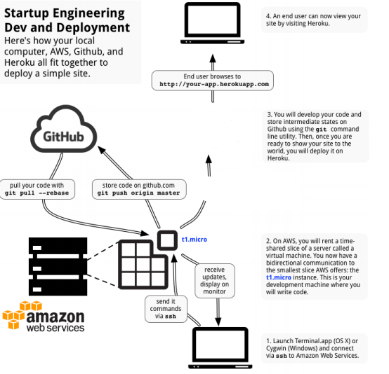

- 1. sign up for Amazon Web Services (AWS)and Github.
- 2. Initialize and connect to an AWS cloud instance.

Set up your terminal
A command line interface (CLI) is a way to control your computer by typing in commands
rather than clicking on buttons in a graphical user interface (GUI). Most computer users are
only doing basic things like clicking on links, watching movies, and playing video games, and
GUIs are fine for such purposes.